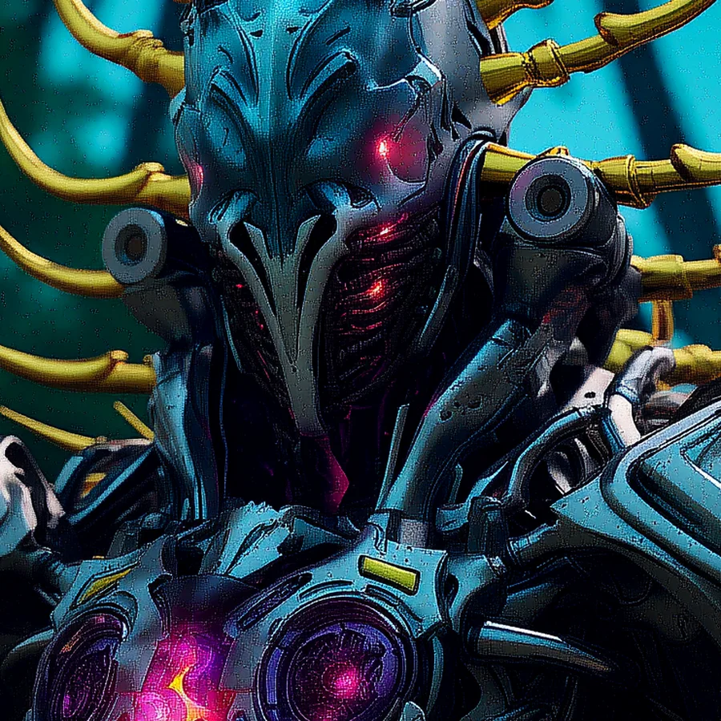

©
©

Gudial
Mortis Syndicate · Legion
Gudial is the Syndicate's most guarded secret: a Synthbot that can read and rewrite living code. The DNA Match strips an enemy's energy to nothing, and hits even harder against those who hide behind a shield. What the Syndicate intends to do with the DNA of Earth 1, nobody on our side knows yet.